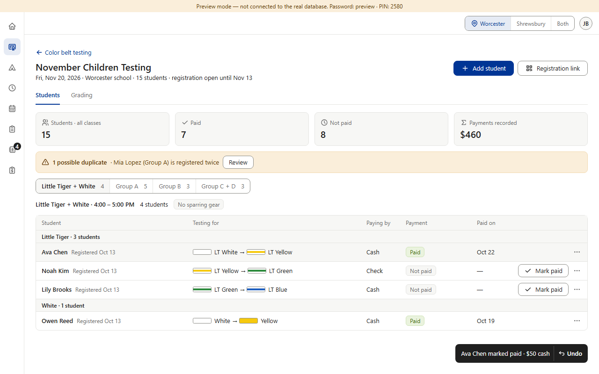
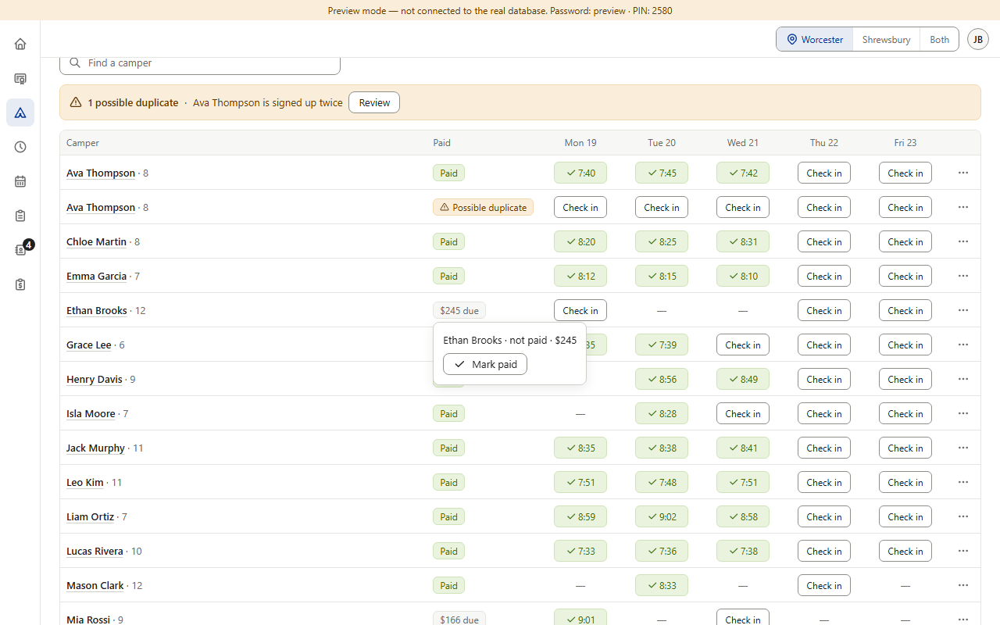
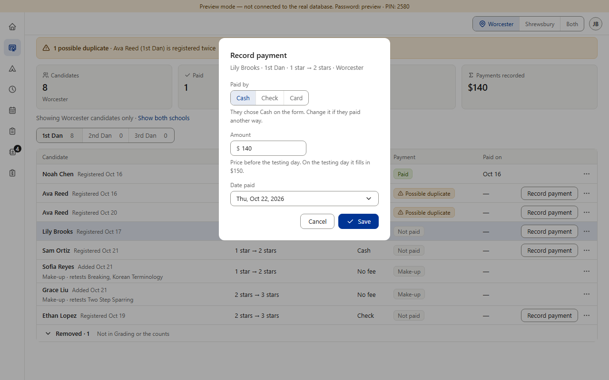
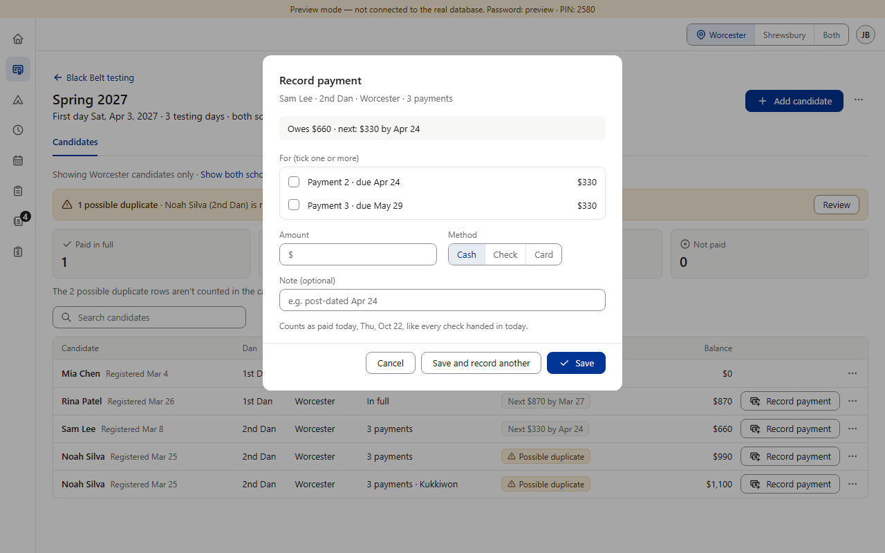
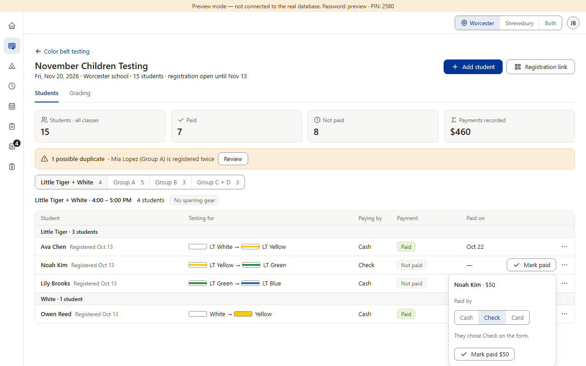
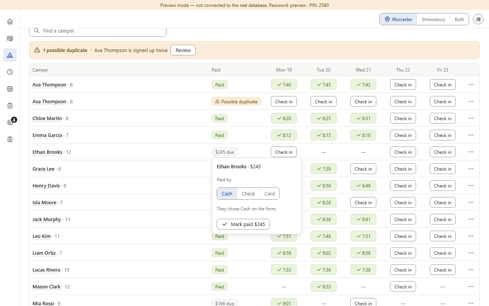
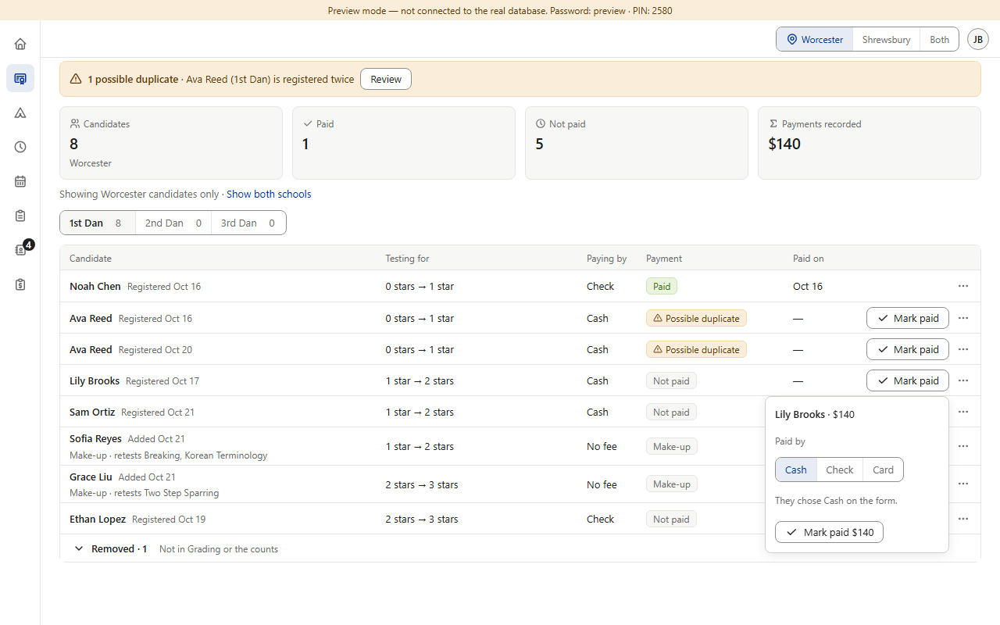

Approved in each section — not a mistake. Each way was signed off on its own: Star's dialog (v0.109, your point that “someone may register cash and pay by check or card”), Color Belt's one click (v0.136, which replaced a dialog you had approved earlier), Camps copying Color Belt and then moving it into a box on the “$ due” tag (v0.709, v0.715), and Black Belt's dialog for payment plans (v0.218). The question: should one way be used everywhere? (Preview screenshots at PC size · fake data · mockup amounts)






